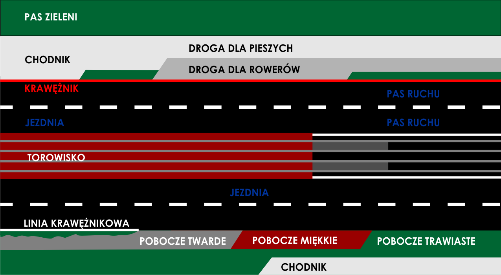

Scenariusz zajęć teoretycznych
Temat zajęć : Włączanie się do ruchu, skrzyżowania równorzędne
Cele główne
Cele poznawcze:
a) Zapoznanie kursantów z pojęciami i określeniami: droga, droga twarda, droga gruntowa, droga wewnętrzna, jezdnia, pas ruch (wyznaczony, niewyznaczony), pojazd, pojazd jedno i wielośladowy, skrzyżowanie, ostrożność, szczególna ostrożność, zasada ograniczonego zaufania, ustąpienie pierwszeństwa, zatrzymanie i postój.
b) zapoznanie kursantów z zasadami włączania się do ruchu oraz przejazdu przez skrzyżowania równorzędne
c) zapoznanie kursantów z zasadami ostrożności, szczególnej ostrożności, oraz z zasadą ustąpienia pierwszeństwa pojazdom z prawej strony (skrzyżowania równorzędne)
Cele kształcące :
a) wykształcić umiejętności analizowania różnych sytuacji pod kątem możliwości włączania się do ruchu, przejazdu przez skrzyżowania równorzędne oraz bezpieczne zachowania w ruchu drogowym
b) wykształcić umiejętności doboru zasad z ustawy „Prawo o ruchu drogowym” do sytuacji przy włączaniu się do ruchu, oraz przecinania się kierunków ruchu
c) wykształcić umiejętności podejmowania decyzji podczas włączania się do ruchu oraz pokonywania skrzyżowań równorzędnych
d) rozwój wyobraźni, przewidywania niebezpieczeństw w ruchu drogowym, świadomość ryzyka, odpowiedzialność, panowanie nad emocjami i agresją na drodze
Cel wychowawczy:
a) kształtowanie postawy poszanowania życia i zdrowia przy włączaniu się do ruchu oraz przecinania się kierunków ruchu
b) życzliwość i szacunek dla uczestników ruchu drogowego
c) kultura w ruchu drogowym
d) bezpieczne zachowanie w sytuacjach nadzwyczajnych
e) ograniczone zaufanie i przewidywania zachowań innych uczestników ruchu
Droga -to wydzielony pas terenu składający się z jezdni, pobocza, chodnika, drogi dla pieszych lub drogi dla rowerów,
łącznie z torowiskiem pojazdów szynowych znajdującym się w obrębie tego pasa, przeznaczony do ruchu lub postoju pojazdów,
ruchu pieszych, jazdy wierzchem lub pędzenia zwierząt
